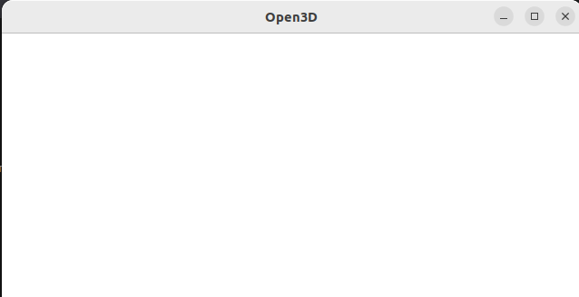
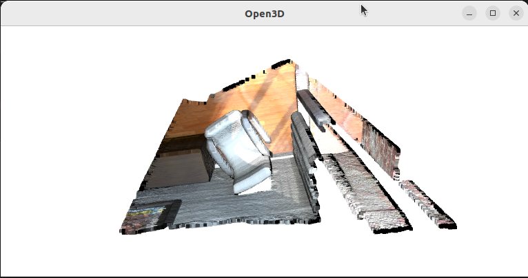

第一次使用Open3D 0.18.0，发现pcd点云显示有问题
1 | import open3d as o3d |
1 | Jupyter environment detected. Enabling Open3D WebVisualizer. |
弹出来的窗口一片空白，也没有任何报错

Debug 经过
一开始以为是在jupyter上使用的原因，去找到了官网的文档 Web visualizer and Jupyter以及对应的example code
1
2
3
4
5
6
7import open3d as o3d
from open3d.web_visualizer import draw
cube_red = o3d.geometry.TriangleMesh.create_box(1, 2, 4)
cube_red.compute_vertex_normals()
cube_red.paint_uniform_color((1.0, 0.0, 0.0))
draw(cube_red)发现这个cube能显示，但是点云就怎么都不行，所以应该不是jupyter的原因。
多番测试无果之后，我在本机安装了Open3D，通过命令行运行，发现一样是一片空白。于是确认在本地运行和在jupyter上的结果是完全一致的。
查看 open3d visualization 相关的文档，找到了官方提供的点云sample，发现这个点云可以正常显示!!
1
2
3sample_ply_data = o3d.data.PLYPointCloud()
cloud = o3d.io.read_point_cloud(sample_ply_data.path)
o3d.visualization.draw_geometries([cloud])1
2[Open3D INFO] Downloading https://github.com/isl-org/open3d_downloads/releases/download/20220201-data/fragment.ply
[Open3D INFO] Downloaded to /home/tt/open3d_data/download/PLYPointCloud/fragment.ply
于是我想办法将官方提供的点云和我本地的点云进行对比
1
2
3
4
5
6
7
8
9
10
11
12
13
14
15
16
17
18
19
20import numpy as np
# 官方点云
cloud_colors = np.asarray(cloud.colors)
cloud_points = np.asarray(cloud.points)
print('cloud colors')
print(cloud_colors)
print('cloud points')
print(cloud_points)
# 我的点云
pcd_colors = np.asarray(pcd.colors)
pcd_points = np.asarray(pcd.points)
print('\npcd colors')
print(pcd_colors)
print('pcd points')
print(pcd_points)
print('\n')
print(pcd_colors[3453])
print(pcd_points[3453])1
2
3
4
5
6
7
8
9
10
11
12
13
14
15
16
17
18
19
20
21
22
23
24
25
26
27
28
29
30
31
32
33
34cloud colors
[[0. 0. 0. ]
[0. 0. 0. ]
[0. 0. 0. ]
…
[0.92941176 0.89019608 0.87058824]
[0.87843137 0.81960784 0.79215686]
[0.87843137 0.81960784 0.79215686]]
cloud points
[[0.65234375 0.84686458 2.37890625]
[0.65234375 0.83984375 2.38430572]
[0.66737998 0.83984375 2.37890625]
…
[2.00839925 2.39453125 1.88671875]
[2.00390625 2.39488506 1.88671875]
[2.00390625 2.39453125 1.88793314]]
pcd colors
[[0. 0. 0.]
[0. 0. 0.]
[0. 0. 0.]
…
[0. 0. 0.]
[0. 0. 0.]]
pcd points
[[nan nan nan]
[nan nan nan]
…
[nan nan nan]
[nan nan nan]]
[0.16862745 0.17254902 0.18039216]
[0.80449188 -1.60404837 4.2510004]这样对比，两者的格式是一致的，而且里面数据的格式也是一致的，color也是 0-1。唯一不同的是，我的点云里有
Nan。我尝试去掉Nan:
1
2
3# pcd = o3d.io.read_point_cloud(path)
pcd = o3d.io.read_point_cloud(path, remove_nan_points=True)
o3d.visualization.draw_geometries([pcd])就水灵灵地显示出来了！
结论
也就是说，Open3D 0.18.0里 (我没有测试别的版本)，带 Nan 的点云是无法显示的。在读点云的时候，带上 remove_nan_points 就可以显示了。